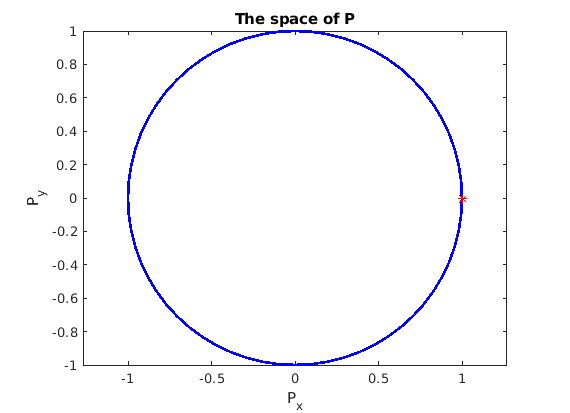

Contents
clear; close all; clc;
Mrugank Dake
a)
A random matrix of n vectors can be generated. In this case, n = 4. plotVec2 then creates a plot of each column vector in A
A = randn(2, 4);
plotVec2(A, '-ok')
b)
Generate two random column vectors and then compute the lengths pf each vector and the angle between the two vectors using the function vecLenAngle
v1 = randn(2, 1); v2 = randn(2, 1); [v1_length, v2_length, delta_theta] = vecLenAngle(v1, v2)
v1_length =
0.8880
v2_length =
1.4318
delta_theta =
0.1588
c)
Generate a random square matrix of size 2 and perform SVD on it to compute U, S, and V matrices.
M = rand(2, 2); [U, S, V] = svd(M);
Define standard basis vectors
e1 = [1, 0]'; e2 = [0, 1]'; E = [e1, e2];
Peform transformation on the basis vectors in the order V, S, and U. For each transformation, the lengths of the resultant vectors and the angle between the resultant vectors can be determined using the vecLenAngle function
VE = V'*E; SVE = S*VE; USVE = U*SVE; [e1_length, e2_length, e_delta] = vecLenAngle(E(:, 1), E(:, 2)) [Ve1_length, Ve2_length, Ve_delta] = vecLenAngle(VE(:, 1), VE(:, 2)) [SVe1_length, SVe2_length, SVe_delta] = vecLenAngle(SVE(:, 1), SVE(:, 2)) [USVe1_length, USVe2_length, USVe_delta] = vecLenAngle(USVE(:, 1), USVE(:, 2))
e1_length =
1
e2_length =
1
e_delta =
1.5708
Ve1_length =
1.0000
Ve2_length =
1.0000
Ve_delta =
1.5708
SVe1_length =
0.3616
SVe2_length =
0.8577
SVe_delta =
0.1179
USVe1_length =
0.3616
USVe2_length =
0.8577
USVe_delta =
0.1179
From the transformations, we can see that the length of the vectors and the angle between the vectors change after transformation with S. This is the diagonal matrix produced in SVD and is responsible for stretching, elimination and addition of new dimensions, thus explaining the change in the length of the basis vectors and the angles between them.
figure(); plotVec2(E, '-ok') hold on; plotVec2(VE, '-or') plotVec2(SVE, '-ob') plotVec2(USVE, '-og') legend('e1', 'e2', 'Ve1', 'Ve2', 'SVe1', 'SVe2', 'USVe1', 'USVe2') title('Plot of basis vectors and their transformations')

d)
Create an array theta of angles 2*pi*n/64, where n goes from 0 to 64 using linspace and the formula
theta = 2*pi*linspace(0, 64, 65)/64;
The data matrix P is composed of the first row being the cosine of the angle and the second row being the sine of the angle for each column vector in theta matrix
P = [cos(theta); sin(theta)];
Next we perform a transformation of the P matrix by V, SV and USV
VP = V'*P; SVP = S*VP; USVP = U*SVP;
Plotting the data matrix P and the first column of the data matrix P
fig1 = figure(); plot(P(1, :), P(2, :), 'LineWidth', 2, 'Color', 'b') hold on; plot(P(1, 1), P(2, 1), 'r*') hold off; axis equal set(gca, 'Color', [0.8, 0.8, 0.8]) title('The space of P') xlabel('P_x') ylabel('P_y')
Plotting all the transformations of the P as it is passed through V, SV and USV and the corresponding transformation experience by the first column vector in P plotted as a red star
fig2 = figure(); plot(VP(1, :), VP(2, :), 'LineWidth', 2, 'Color', 'g') hold on; plot(VP(1, 1), VP(2, 1), 'r*') plot(SVP(1, :), SVP(2, :), 'LineWidth', 2, 'Color', 'k') plot(SVP(1, 1), SVP(2, 1), 'r*') plot(USVP(1, :), USVP(2, :), 'LineWidth', 2, 'Color', 'y') plot(USVP(1, 1), USVP(2, 1), 'r*') legend('VP', 'VP1', 'SVP', 'SVP1', 'USVP', 'USVP1') set(gca, 'Color', [0.8, 0.8, 0.8]) title('Transformation of P through V, SV and USV') xlabel('P_x') ylabel('P_y') axis equal

function plotVec2(A, t) % Check if the height of the matrix is 2, if so, plot the column % vectors off the matrix A and scale axes from -1 to 1. Else, give an % error if size(A, 1) == 2 plotv(A, t); axis([-1, 1, -1, 1]); else disp('Matrix height is greater than expected') end end function [v1_length, v2_length, delta_theta] = vecLenAngle(v1, v2) % Given input vectors v1 and v2, the lengths of the vectors v1 and v2 % are computed as Euclidean distance. Then determine if either of the % lengths are zero, if so, the length of the angle between the vectors % cannot be determined. If the length is non-zero, then the angle can % be computed as the cosine inverse of the ratio of the dot product of % two vectors and the product of lengths of the two vectors v1_length = sqrt(sum(v1.^2)); v2_length = sqrt(sum(v2.^2)); if v1_length == 0 || v2_length == 0 delta_theta = 'Not defined'; else delta_theta = acos((v1'*v2)/(v1_length*v2_length)); end end